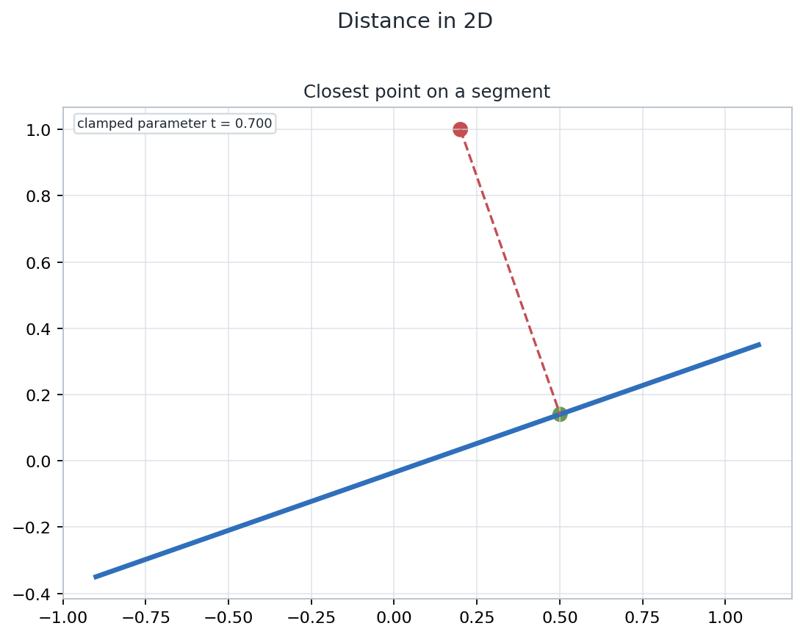
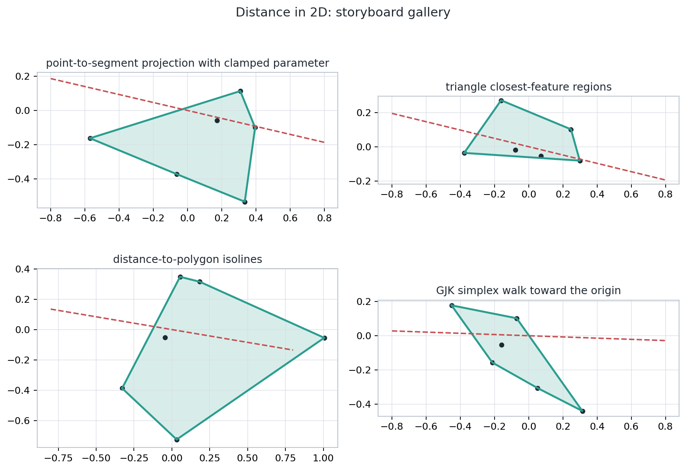
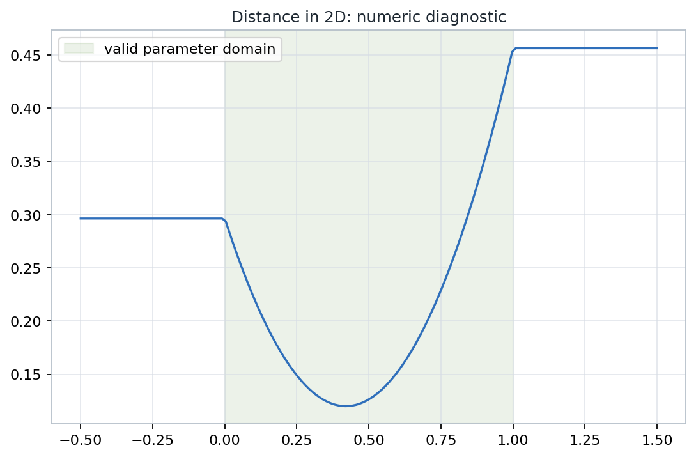

Closest points, active features, constrained parameters, and convex distance algorithms for planar graphics geometry.
Printed pages 189-240; PDF pages 236-287.
Notebook: 06-distance-in-2d.ipynb
Lecture aim: make every distance number carry the feature and parameter data needed for robust graphics code.
Minimize \(F(u)=\|X(u)-Y\|^2\) subject to \(u\in D\).
Line: free parameter. Ray: lower bounded. Segment: clamped interval.
The minimizer may live on an endpoint, an edge, or an interior region.
The final vector should be perpendicular to every free direction.
\(t_\ast=\dfrac{(Y-P)\cdot d}{d\cdot d},\qquad X(t)=P+t\,d\)
| Primitive | Legal parameter | Closest parameter |
|---|---|---|
| Line | \(t\in\mathbb{R}\) | \(t=t_\ast\) |
| Ray | \(t\ge 0\) | \(t=\max(0,t_\ast)\) |
| Segment | \(0\le t\le 1\) | \(t=\min(1,\max(0,t_\ast))\) |
The formula is the same until the domain interrupts it. Robust implementations make that interruption explicit.
\(Q(t)=P_0+t(P_1-P_0)\)
\(t=\operatorname{clamp}(t_\ast,0,1)\)
The returned state is not just a distance. It also tells whether the closest point is \(P_0\), \(P_1\), or an interior point on the segment.

The dashed residual meets the segment at the computed closest point.

The notebook storyboard shows the same active-feature idea across several 2D primitives.
Break a polyline or polygon boundary into candidate segments.
Run a point-to-segment query on candidates, using bounding or convexity shortcuts when available.
Compare squared distances and preserve the winning feature label, not only the numeric minimum.
The scalar minimum can be correct while the feature label is unstable near a Voronoi boundary. That instability matters for contact normals and continuous collision logic.
Minimize \(F(s,t)=\|P_0+s\,d_0-(P_1+t\,d_1)\|^2\).
| Pair | Domain shape | Active feature cue |
|---|---|---|
| line-line | \(\mathbb{R}^2\) | interior stationary point or parallel offset |
| line-ray | half-plane | ray endpoint may activate |
| ray-segment | strip with one lower bound | endpoint or side boundary |
| segment-segment | unit square | edge-edge, edge-vertex, or vertex-vertex |
\(d(A,B)=\min_{a\in A,\ b\in B}\|a-b\|=\operatorname{dist}(0,A-B)\)
Choose a search direction and request an extreme point of \(A-B\).
Keep the smallest simplex whose convex hull can improve the origin distance.
Stop when the simplex contains the origin or when no support point can reduce the distance.
GJK is not drawing the full Minkowski difference. It is asking only for support points that matter to the current origin-distance certificate.

The shaded interval is the legal parameter domain; outside it, the boundary feature controls the distance.
A contact solver, picking tool, or curve editor usually needs the certificate more than the square root.
A segment can collapse to a point; the algorithm should route to point distance deliberately.
Small denominators require a branch that preserves the intended geometry.
Several features may be equally close; deterministic tie handling helps caching.
Polynomial curves can provide several stationary candidates inside the domain.
Every tolerance branch should still produce a recognizable feature, a legal parameter, and a residual that explains why the branch was accepted.
Declare representations and legal parameter domains before computing.
Minimize squared distance and keep the unconstrained candidate visible.
Clamp, branch, or enumerate boundary candidates as the domain requires.
Select the minimum by squared distance and attach feature labels.
Assert the residual, domain membership, and feature stability checks.
Given a query point and a triangle, predict whether the closest feature is a vertex, an edge, or the interior. Then write the minimum set of dot-product tests that would certify your answer.
Extension: move the query point across a boundary between two regions and describe which returned fields should change.
The durable pattern is: represent the primitive, minimize on its legal domain, name the active feature, and check the certificate.